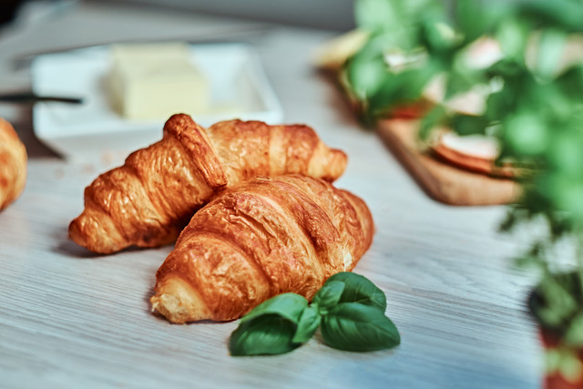
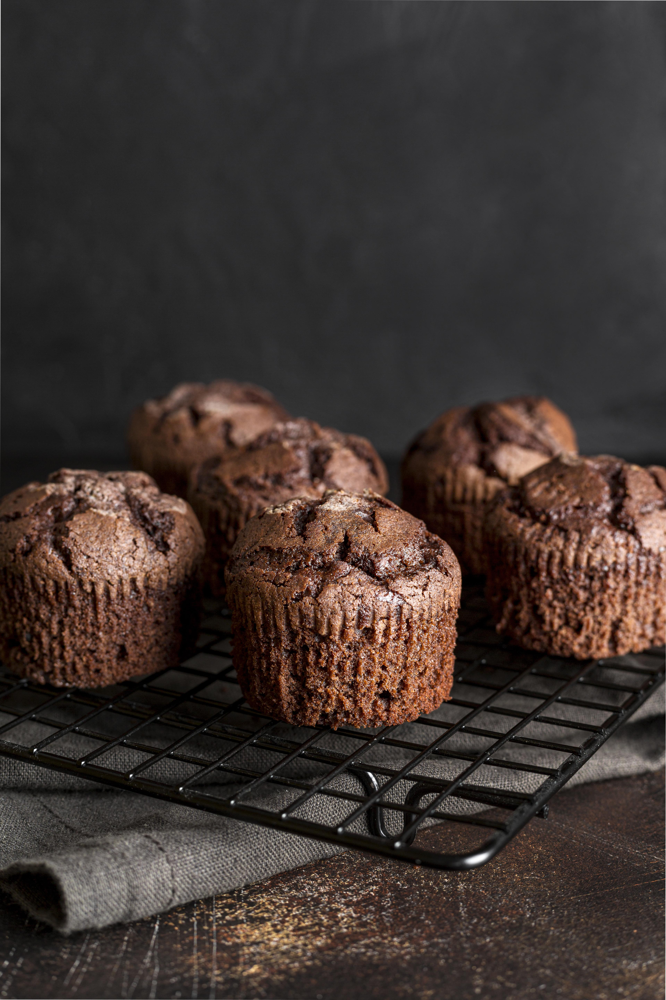

Наша продукция

Пшеничный хлеб
Пшеничной хлеб выпекается каждый день из свежей пшеничной и ржаной муки с использованием...

Круассаны с шоколадом
Круассаны — это настоящая французская классика, приготовленная из нежного слоёного теста с использованием...

Шоколадное пирожное с сахарной пудрой
Мои пирожные — это маленькие шедевры, которые тают во рту и дарят сладкое наслаждение...

Булочки с корицей
Булочки с корицей — это ароматное лакомство, которое тает во рту, мы готовим их из нежного теста, обильно посыпанного...

Шоколадные маффины
Шоколадные маффины — это настоящее наслаждение для сладкоежек, они выпекаются из богатого шоколадного теста с добавлением...
Связаться с нами
Адрес: г. Оренбург, ул. Неизвестная, 1
Телефон: +7 (777) 777-77-77
Время работы: ежедневно с 8:00 до 20:00